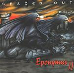

| Artist: | Spaced Out |
| Title: | Eponymous II |
| Label: | Unicorn Records UNCR-5003 |
| Length(s): | 53 minutes |
| Year(s) of release: | 2001 |
| Month of review: | [09/2001] |
| 1) | Sever The Seven | 8.56 |
| 2) | The Lost Train | 6.20 |
| 3) | Infinite Ammo | 4.17 |
| 4) | For The Trees Too | 4.55 |
| 5) | Trophallaxie | 5.57 |
| 6) | Sever The Seven - Revisited | 5.33 |
| 7) | The Alarm | 3.58 |
| 8) | Glassosphere - Part II | 5.31 |
| 9) | Jamosphere | 7.50 |
The band contains the main gist of the previous track further on the bass rich The Lost Train. Again, the mood evoked is one of tension with the main style of the band continuing to be a potent kind of jazzrock. At times, Fafard plays in a very heavy style, a bit like Stu Hamm. Notwithstanding the rockiness of the album, there is also quite a bit of subtlety here, one might alomost be tempted to say sneakiness. In other parts the guitar is let out of the bag while Fafard plays his bass staccato fashion. A cat and dog fight being put to music (noise?). Although I tend to drop a few names here and there the band is for me hard to compare with anything besides a bit of King Crimson, the first side of Hackett's Voyage Of The Acolyte and maybe some Present. And the music not only sounds "new" to me, it is good as well.
Infinite Ammo introduces some organ into the play. I guess Fafard likes to play computer games at times, tweaked ones where he can simply fire away as he does on his bass on this track. A hectic piece with outstretched guitar chords and a strong sense of urgency. Phew.
For The Trees Too is more or less straightforward jazzrock, well straightforward... it does have a kind of blues feel. The guitar meanders, the bass bubbles and few inadvertent notes on piano. The song has a Zappatic marimba intermezzo and ends with some frantic, but melodic guitar.
Eeriness dominates Trophallaxie until the bass breaks itself loose and loosens up the keyboards and percussion in the process. The final part has quite a bit of loose percussion, very nice. Time for a reprise with Server The Seven - Revisited. And a Revisited it sure is. The guitar sound and such all return with the same sense of urgency and a drummer with his hands full.
The Alarm has a rather groovy opening continuing with pacey marimba. Glassosphere - Part II, continued from the final track of the debut album, sounds a bit more acoustic and has some aspects of a gothic sound track, with a very playful almost Latinlike intermezzo in the middle. The final part has fast acoustic guitar and vocals that reminded me of Enya's Watermark.
Final track is of the more meandering type with some typical guitarwork and even some organ in there. To make it all a bit more jazzy a tenor saxophone is wrung out over a microphone. This is probably the most jazzy of the pieces so far.